svn使用教程
本篇文章动图带大家快速学会 svn 的基本使用方法，掌握 Windows 上最常用的 svn 客户端 TortoiseSVN 的用法。
1. 了解 SVN 客户端、服务端
SVN 分为客户端、服务端，SVNBucket 就是一个 SVN 的服务端，负责托管 SVN
的代码。
我们需要使用 SVN 的客户端来跟服务端打交道。
在 Windows 上，我们推荐使用 TortoiseSVN，可视化的操作界面，集成右键菜单，非常方便。
2. TortoiseSVN 介绍
也叫乌龟SVN，是当前 Windows 上最流行的 SVN 客户端，没有基础的人也能快速的学会
如果你还没有 TortoiseSVN 可以查看 TortoiseSVN安装和汉化教程
更多其他 SVN客户端下载
下面我们就以 TortoiseSVN 作为客户端来讲解如何使用，服务端我们使用 SVNBucket
3. Checkout检出代码
- 在SVNBucket的项目详情-源码页面-复制SVN地址
- 在你需要保存代码的地方右键选择
SVN Chekout... - 填写SVN地址，填写保存目录，输入SVNBucket网站登录用户名密码。
- 点击确定就能同步代码到本地了。
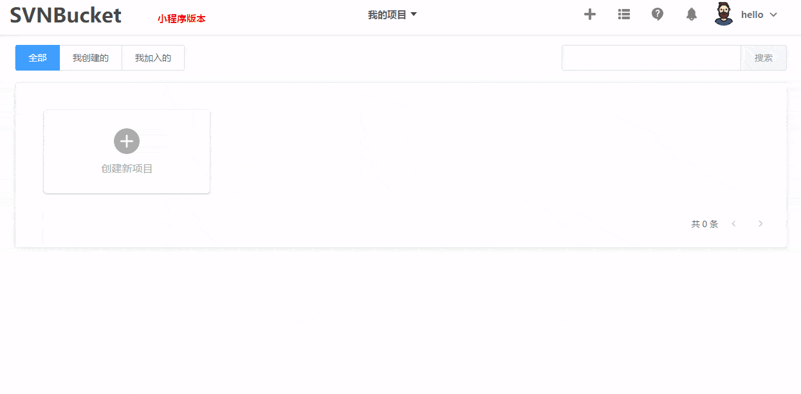
4. Update更新代码
右键 SVN Update 更新代码，这样就能把其他人提交的代码同步到自己电脑上了
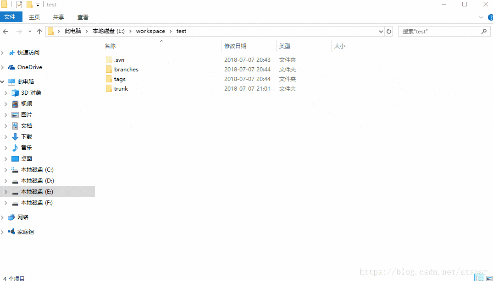
5. Commit提交代码
提交代码也很简单，右键SVN
Commit...，填入提交描述，就可以把本地提交的代码提交到服务器了。
在提交代码前我们应该update下代码，这是个好习惯，可以避免覆盖别人的代码和代码冲突。
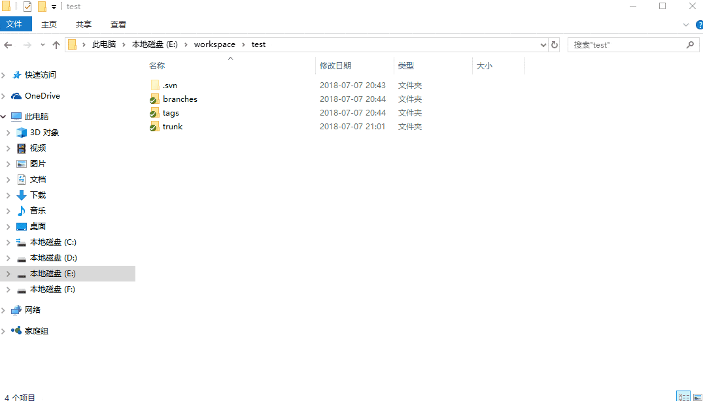
6. 忽略文件
有时候某些目录或者文件我们不想提交到 SVN 服务器，这时我们可以忽略这些文件。
下面演示忽略 temp 目录和 *.map 文件
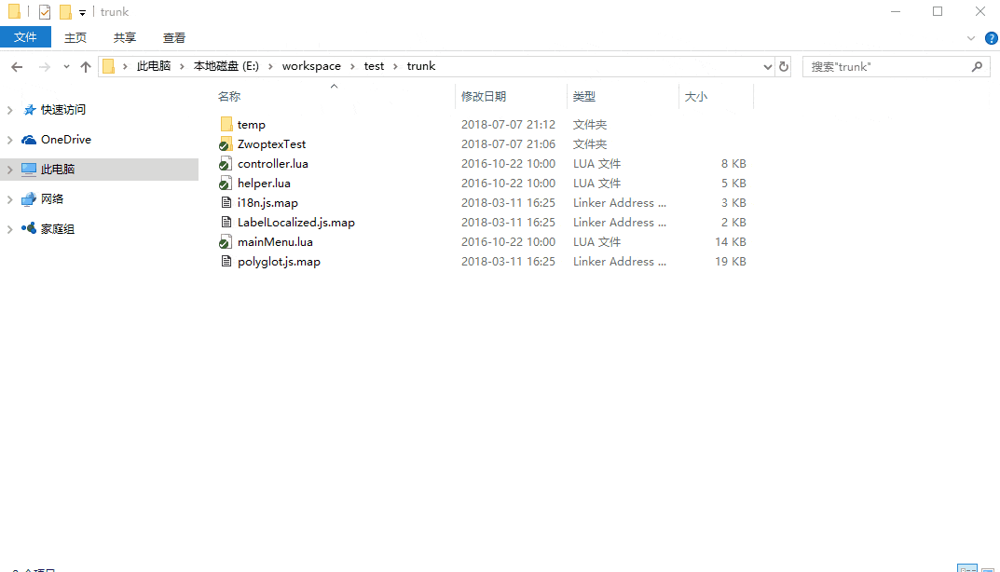
撤销忽略，文件的操作方式步骤是一样的，目录的有点不一样，请看下面演示
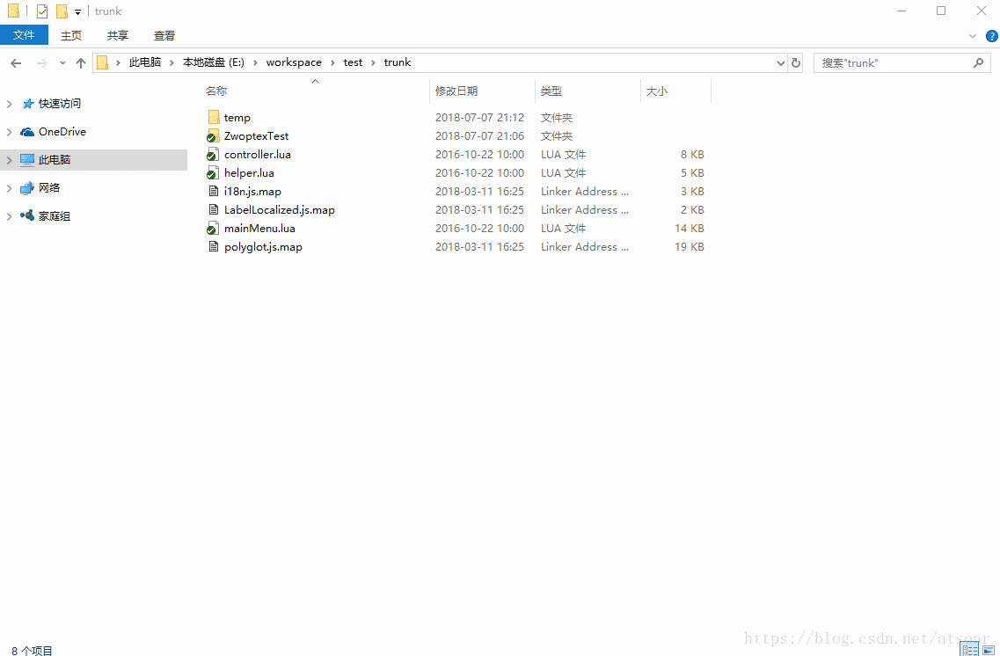
7. 撤销本地修改
有时候我们本地修改了一些文件，但是突然又不需要了，想丢弃本地的修改回去SVN上最新的版本怎么操作呢？
右键选中需要撤销的文件，TortoiseSVN->Revert
就可以丢弃本地修改了。
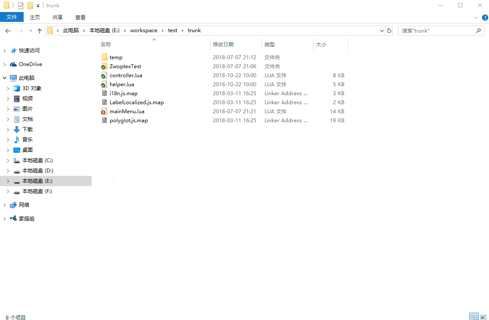
8. 撤销已经提交的代码
已经提交到SVN仓库的代码发现改错了，还能后悔撤回吗？
- 右键TortoiseSVN ==> show log 查看提交记录
- 选择我们需要回去的版本，右键选择
Revert to this version，这样就回去了指定的版本 - 最后你还需要
commit下撤销后的代码到SVN仓库
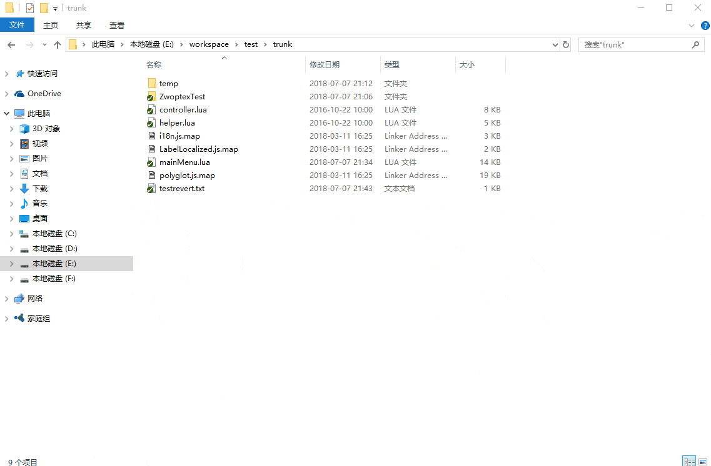
9. SVN仓库目录和开发建议
我们建议每个仓库的根目录都创建trunk、branches、tags目录，这是经典的 SVN 目录结构，方便开发和维护
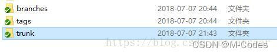
个人比较喜欢的开发模式是，开发时都在trunk写代码，上线产品后就创建分支到branches目录，线上版本出问题了，我们应该在对应的分支上进行修复，并且把修复后的代码合并到主干上。
10. 如何创建分支
以上面的目录结构为例子，我们从当前主干创建一个分支出去，表示1.0版本，操作步骤如下：
- 右键 trunk 目录 => 右键TortoiseSVN => Branch/tag
- 填写分支路径
/branches/online1.0，填写注释，选择最用最新的版本开分支，如下：
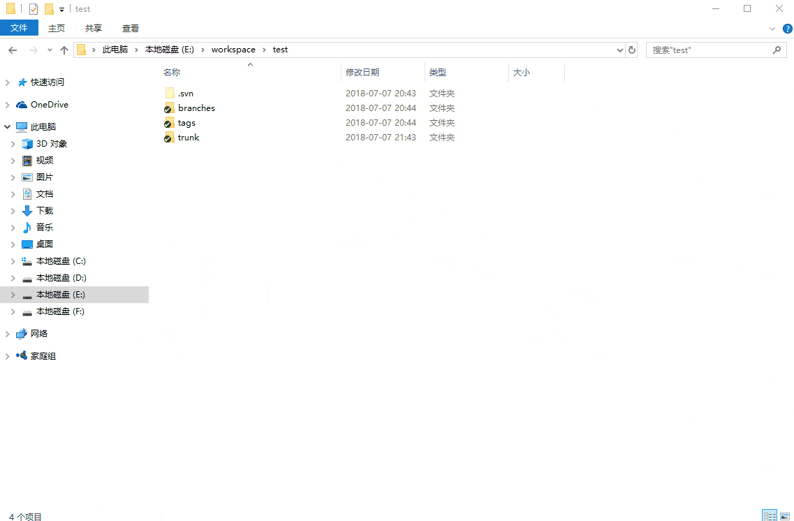
11. 如何合并代码
假设我们在分支上修复了一个线上的BUG，需要把代码那个代码合并到主干来，操作步骤：
- 在分支的跟目录点击
show log - 选中需要合并过去主干的提交记录（可以多选）
- 点击
merge revision to ... - 选择主干的跟目录，点击确定，就合并过去了。
- 在主干上提交这次合并的内容
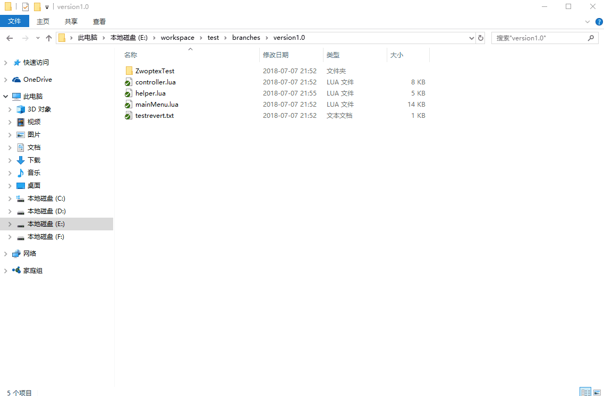
SVN 的这个指定提交记录合并功能非常的方便，我们日常中经常会遇到线上出问题需要修复，修复后把代码合并到主干的情况。
注意：你在分支上的什么目录点击合并，那就需要定位到主干的对应目录合并，不然会出错。
另外如果你有大量的代码需要合并或者不知道哪些提交记录需要合并，可以使用Beyond Compare来进行对比合并，也是非常方便的，视频教程使用BeyondCompare做复杂代码合并。
12. 切换分支
右键TortoiseSVN => Switch => 选择需要切换的分支，点击确定就可以了
13. 修改仓库地址
如果您的仓库地址变了，是不是需要重新checkout一份代码呢？
快速更换：右键点击仓库根目录 => TortoiseSVN => relocate，修改仓库地址，点击确定后就修改好了
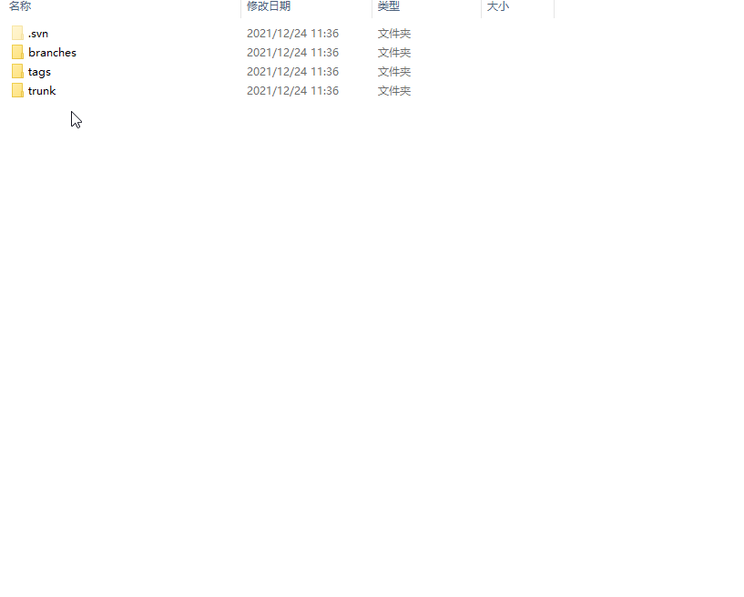
如果还有不明白的地方，你还可以查看 SVN 视频教程
非开发人员还有更简单的操作方式：最简单的 SVN 上传、下载
更多阅读：SVN 常用命令